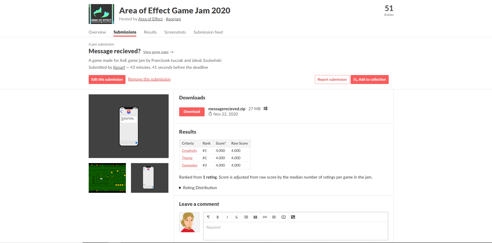
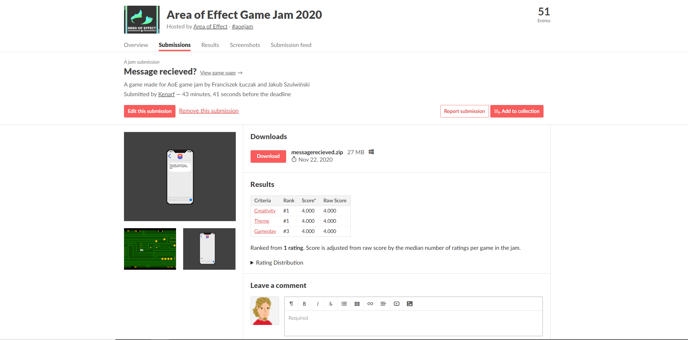
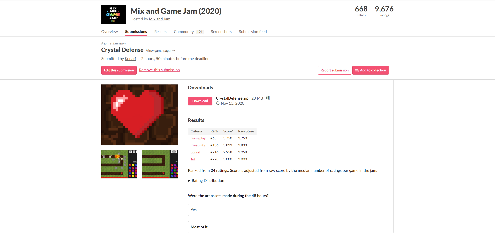
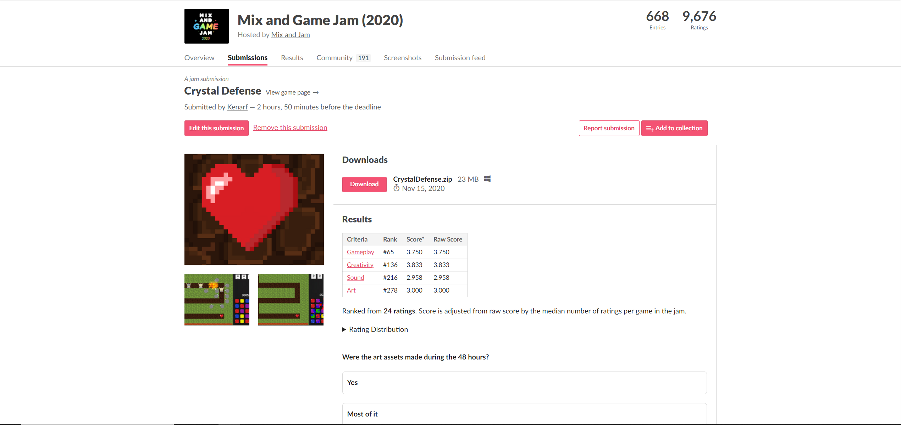
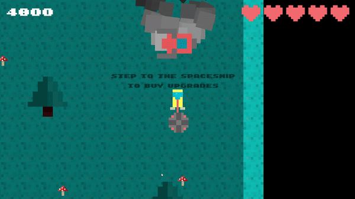
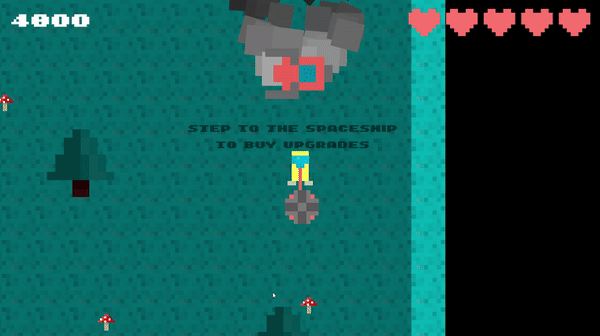
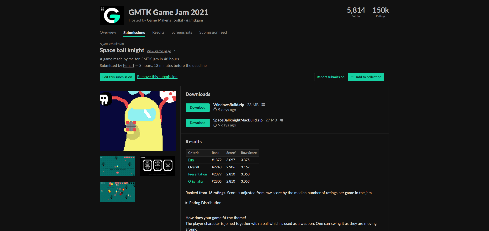
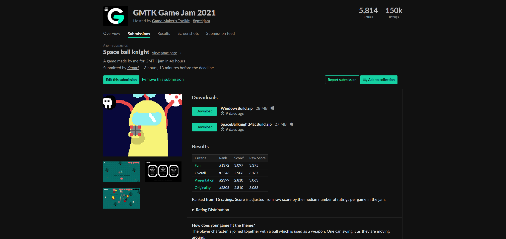

barry and the zombies


Barry and the zombies is a top-down roguelike game. The player finds himself in a base full of dangerous enemies, traps, and bosses. One's main goal is to explore and find out where did the zombies come from. In the game, one can find a multitude of items, such as weapons, usable items with a variety of different effects, and passive items, granting bonuses for the player. "Barry and the zombies" is my best game project so far, which taught me a lot when it comes to game design and programming. It has been played by a total of 50 players. The game was made entirely in Unity3D engine and programmed in C#. Every game experience is different because of procedural room generation as well as placement of the enemies and items. Download here. The code can be found on my github.
Hack and slash project
in development


Hack and slash project is a small RPG/hack and slash project (prototype) made in order to prove to myself I can build a fully functional RPG game using unity. It consists of a fighting system, a questing system, a dialogue system, and much more. The work is currently suspended and it will not be developed into a full product, yet was a great learning opportunity for me and to build up my self-esteem. It taught me to manage my code better and many important things concerning OOP in C#. The code can be found on my github and the devlog conducted weekly can be found here.
message received?


 

"Message received?" is a game project developed entirely for AOE game jam in 72 hours. It is an arcade game with a short story presented in text messages. Gameplay revolves around an arcade system where the player dodges obstacles in order to broadcast the message.The game can be downloaded here. The submission received positive grades placing first in most of the categories. The game can be found here.
crystal defense


 

Crystal defense is a game developed for mix and game jam in 72 hours. It is a witty mix between a candy crush-like game and tower defense. Its main goal is to defend the heart crystal using different towers. In order to earn points, one has to connect crystals of the same color. It has been rated positively and placed 68 in gameplay out of 668 submissions. It can be downloaded here
space ball knight
 

 

"Space ball knight" is a game created in 48 hours for the GMTK game jam. It is a top-down fighter game with unusual mechanics, where our only weapon is a metal ball joined to the player. The main character is an intergalactic traveler who gets deserted on a mysterious planet, the main goal is to defeat the enemies and earn enough money to repair the spaceship and leave the planet safely. Despite average ratings the game placed high in the fun category. The game can be found here.